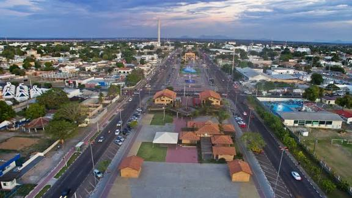
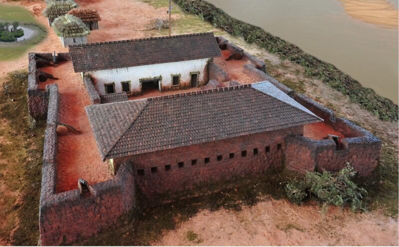
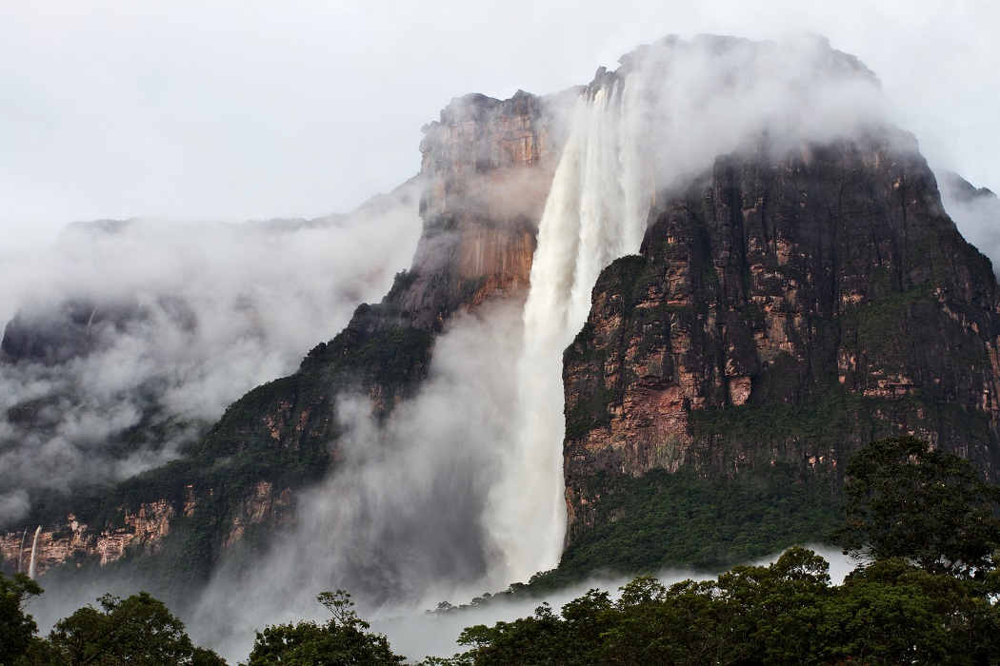
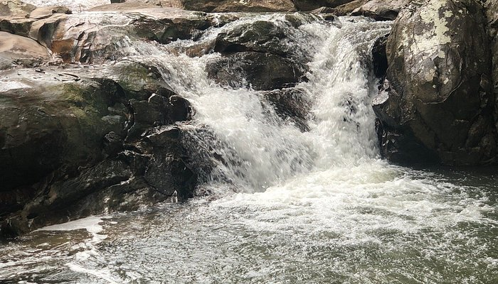
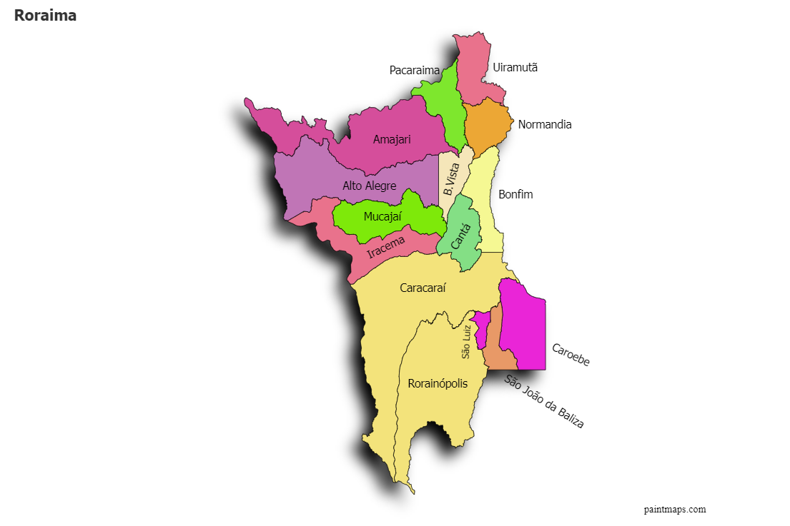

Visão Geral

Roraima possui uma das menores populações do Brasil e destaca-se por sua grande riqueza ambiental, paisagens naturais impressionantes e forte presença de povos indígenas. O estado apresenta extensas áreas de floresta amazônica, campos naturais e montanhas que atraem pesquisadores e turistas.
Dados Gerais
| Informação | Descrição |
|---|---|
| Capital | Boa Vista |
| Região | Norte |
| Área | Aproximadamente 224.300 km² |
| Gentílico | Roraimense |
| Bioma Predominante | Amazônia |
| Fuso Horário | UTC−4 |
História

A ocupação da região ocorreu inicialmente por povos indígenas muito antes da chegada dos colonizadores europeus. Durante o período colonial, a Coroa Portuguesa fortaleceu sua presença para garantir o controle das fronteiras amazônicas.
Em 1943 foi criado o Território Federal do Rio Branco, posteriormente denominado Território Federal de Roraima. O estado foi oficialmente elevado à categoria de unidade federativa pela Constituição Federal de 1988.
Geografia
O relevo de Roraima apresenta serras, planaltos, florestas e extensas áreas de savana conhecidas como "lavrado". O ponto mais elevado do Brasil, o Pico da Neblina, situa-se próximo à divisa com o Amazonas.
O estado possui importantes rios amazônicos, como o Rio Branco, o Rio Uraricoera e o Rio Tacutu.
Meio Ambiente

Roraima abriga importantes áreas de conservação ambiental e reservas indígenas. Sua biodiversidade inclui centenas de espécies de aves, mamíferos, répteis e plantas típicas da Amazônia.
Economia
A economia roraimense está baseada na administração pública, comércio, agricultura, pecuária e extrativismo. Entre os produtos agrícolas destacam-se arroz, soja, mandioca, milho e frutas tropicais.
Nos últimos anos, atividades ligadas ao turismo ecológico e de aventura têm contribuído para a diversificação econômica do estado.
Povos Indígenas e Cultura
Roraima possui significativa população indígena, representada por diferentes etnias, entre elas Macuxi, Wapichana, Yanomami, Ingarikó e Taurepang. Essas comunidades preservam tradições, línguas e conhecimentos ancestrais que compõem parte essencial do patrimônio cultural brasileiro.
Turismo

Entre os principais atrativos turísticos destacam-se o Monte Roraima, o Parque Nacional do Viruá, as cachoeiras da Serra Grande, comunidades indígenas e os campos naturais do lavrado.
Mapa do Estado
